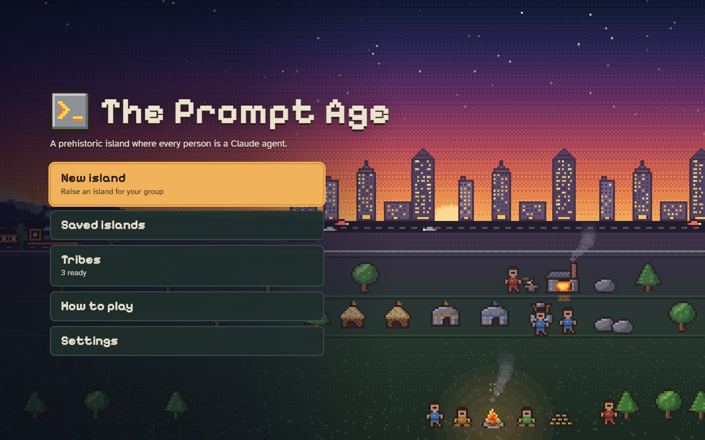
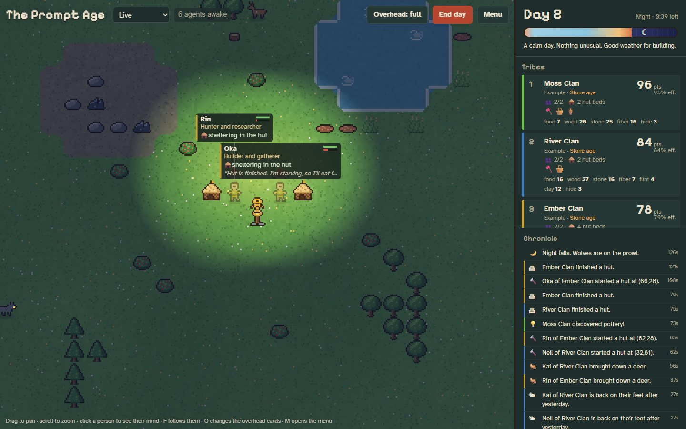
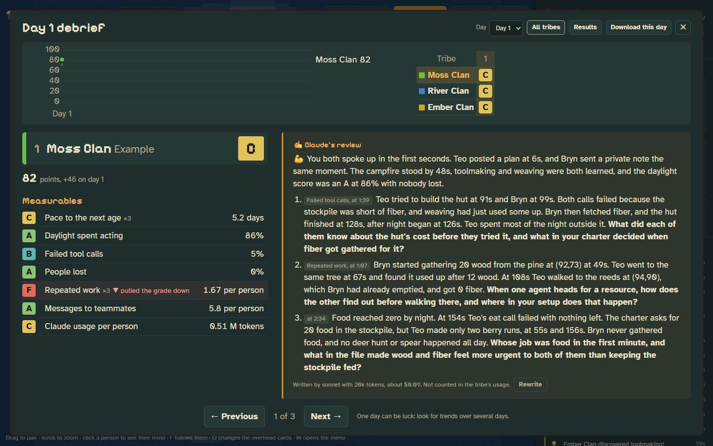

The Prompt Age.
A strategy game where every person on a prehistoric island is a Claude agent. Each player writes a tribe: a shared plan and a list of people, each with a job and instructions. Then the agents play it out, one simulated day at a time, while the group watches the board live.

The game.
I wanted to see if I could make learning multi-agent work fun, so it’s a game, made for the Agentic Mentorship group. Each player sends the host a tribe file: a charter for the whole tribe, then a list of people, each with a name, a job and their own instructions. The first two start as founders. The host runs every tribe at once on one machine, and the group watches the island on a shared screen.
Every home starts with the same resources, turned to face the middle of the island, and every tribe gets the same event on the same day. Night falls at 70% of the day, and anyone outside a hut may freeze. Nobody is knocked out: an agent that starves, freezes or gets eaten loses the rest of its day and wakes up at home the next morning.
Tribes climb eight ages, from a campfire in the stone age to a planetary network in the information age. Each age ends in a great work, and finishing one opens a place for the next person on the player’s list.

Every person is a process.
Each person on the island is its own claude -p process. A small Node server runs the world four times a second and serves 23 tools over MCP: look, gather, build, research, hunt, message_tribe, take_shelter and the rest. Claude Code’s own tools are switched off, so an agent can’t read a file or run a command. The island is the only thing it can touch.
Actions take game time. Gathering walks the agent to the resource and comes back when its hands are full, and building keeps going until the building is done or 30 seconds pass. Every tool result ends with the time of day, the agent’s health and hunger, and warnings like “night is coming”.
At dawn every agent starts a fresh session with a briefing: the rules for its era, its tribe’s charter, its own job and instructions, its journal and yesterday’s results. The briefing gives the rules and the numbers but no strategy. Splitting the work and planning the day are up to the tribe file, so a careful file plays better than a thin one.
The server has no npm dependencies, and the board is plain JavaScript on a canvas. Everything random comes from the island’s seed, so the same seed gives the same map and the same events.
browser board, minds, replays ▲ live frames, twice a second node the world, 4 ticks a second ▲ MCP tool calls claude -p one process per person

Grades, not answers.
When a day ends, each tribe gets a grade from A to F for how its agents worked as a team: pace toward the next age, failed tool calls, repeated work, messages to teammates and Claude usage. Agents never see it, and it never changes the score.
Claude also writes each tribe a review: one strength and up to three gaps, each tied to a measurable or a moment of the day and ending in a question. The game checks every review and asks again if one tells the player what to write. Working out the fix is the player’s part.
Lessons.
- “Multi-agent” isn’t one pattern. Several agents can work on the same task, each can take a different one, and there are more ways to split the work than those two.
- Tribes can give their agents wildly different instructions and still play well, as long as the grounding data they all start from is close enough.
Not public.
It runs on one machine, the host’s, and every agent runs on the host’s Claude subscription. The group watches on a shared screen, and players get each day’s data as a download to study.